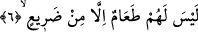

başka âyet-i kerimede bu gerçeğe şöyle temas eder: “Onlar, cehennemle kaynar su
arasında dolaşır dururlar.” (Rahman, 55/44)
Bu okuduğumuz son âyette tabiat narına cehl-i mürekkep pınarına işâretler vardır. Bu
pınar o câhillerin varıp su içtikleri kaynaktır. Ayrıca burada eziyet veren bozuk itikada
işâret edilmektedir.
6. Onlar için kuru dikenden başka yemek yoktur,
Bu ifâde kâfirlerin içeceklerinin beyân edilmesinin ardından Cehennemde ne
yiyeceklerini açıklayıcı bir ifâdedir. Bu âyet-i kerimede akıllı kimselere âid olan
zamirin getirilmesi bize yukardaki “vucuh/yüzler” kelimesiyle kasdedilenin o yüzlerin
sâhipleri olduklarına işâret etmektedir. Ancak bundan önce insanların kendilerinin değil
de yüzlerinin ifâde edilmesi, yüzlerin huşu duyduğunun, çalışıp yorulacağının ve
Cehenneme gireceklerinin ifâde edilmesi, bu organların içteki duygunun ortaya çıktığı
yerler olmalarından dolayıdır. Gerçekten insanın içinden geçenler yüzüne akseder.
Üstelik çoğu zaman insanların şahısları ve kişilikleri “yüz” kelimesiyle ifâde edilir.
Darî’ kelimesinin anlamı kuru şebrak demektir. Şebrak bir tür diken olup develer taze
ve yaş iken bunu yerler. Kuruduğunda ise ondan kaçarlar çünkü bu diken artık öldürücü
bir zehir hâline gelmiştir.
Fethu’r-Rahman’da ifâde edildiğine göre bu dikene “darî’” denmesi bedeni
zayıflatmasından ve çelimsiz hale getirmesinden dolayıdır. Zaten bu kelimeden türeyen
fiilin anlamı zayıf ve zelil düştü demektir.
İbn Abbas (r.a.)’tan merfû olarak bize nakledilen bir haberde dari’ ile ilgili olarak
şunlar ifâde ediliyor: Dari’ ateşin içerisinde dikene benzeyen bir nesnedir. Bu, acı
ağacın öz suyundan daha acı, leşten daha pis kokulu, ateşten daha sıcaktır. İşte bu
cehennemliklerin bir kısmının yiyecek olduklarıdır. Zakkum ve ğıslin ise amellerine
göre cehennemliklerin diğerlerinin yiyecekleri şeylerdir. Kelimeleri bu şekilde
açıkladığımızda Hakka sûresinde geçen âyetle bu âyet arasındaki var gibi gözüken
çelişki ortadan kalkıyor. Hatırlamak gerekirse Allah Hakka sûresinde bu konuyla ilgili
olarak şu şekilde bir ifâdeye yer veriyordu: “Ancak günahkarların yediği kanlı
irinden (ğıslin) başka yiyeceği de yoktur.” (Hakka, 69/36,37)
Sa’di Müftî ise şöyle diyor: Allah’ın cehennemliklerin bedenlerden akan kanlı irini
dari’/diken hâline getirme kudreti vardır. Dolayısıyla onların yiyecekleri özü irin olan
dari’ olmuş olur ve böylece iki âyet arasındaki çelişki ortadan kalkar.
Fakir (Bursevî)’in kanâatine göre diken anlamına gelen dari’in kanlı irin anlamına
gelen ğıslin ve zakkumun aynı şahsın çeşitli amellerine göre yiyecekleri olması
mümkündür. Çünkü yapılan her amelin özel bir etkisi ve belirli bir karşılığı vardır. Şu